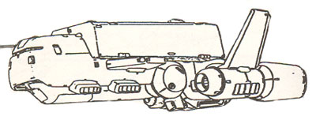

| Riah Republic Patrol Ship |
|
|  | |
General and Technical Data |
|
|
Unit Type: light cruiser Operator: Riah Republic Propulsion system: 2x rocket thruster, 4x manevering thrusters Hangar capacity: 1 cargo, 2 mobile suits, 2 fighters Launch catapults: 0 Fixed armaments: 2x fixed fore MPC; 1x 2-barrel antiaircraft beam turret Technical and Historical Notes After several close calls during Operation British and the Lourm campaign, the Republic of Riah decided that it would have to comission its own space battleship, in order to provide a peacekeeping role in case of a battle inside its own airspace. Taking a markedly different approach from either Federal or Zeon battleships, the Riah Patrol Ship was the result. About half the size of Federation cruisers, the Riah Patrol Ship is designed with maneuverability and versatility in mind, able to engage either warships or mobile suits. Because of its size it can maneuver very well compared to a Salamis or a Musai, and is still reasonably well armored. A large hangar for a ship its size houses two mobile suits as well as two space fighters. What it has in maneuverability and hangar space however, it lacks in brute force. Because of its size, the Riah Patrol Ship is deficient when it comes to its mega particle cannons. Two fire linked fixed MPCs run the length of the ship, together having about the strength of a single Salamis deck gun. A second, more new age MPC turret is armed directly above the bridge. This fast targetting weapon has about the strength of a mobile suit beam rifle, and a quick rate of fire. It is chiefly designed for downing enemy mobile suits, but can be used against warships at close range as well. All in all, the Riah Patrol Ship is not well suited for large scale engagements, but meets the role it was designed for quite well - emergency defense of Side 6's colonies. |
 RPG quick stats sheet
RPG quick stats sheet